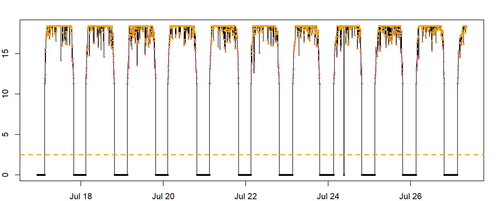
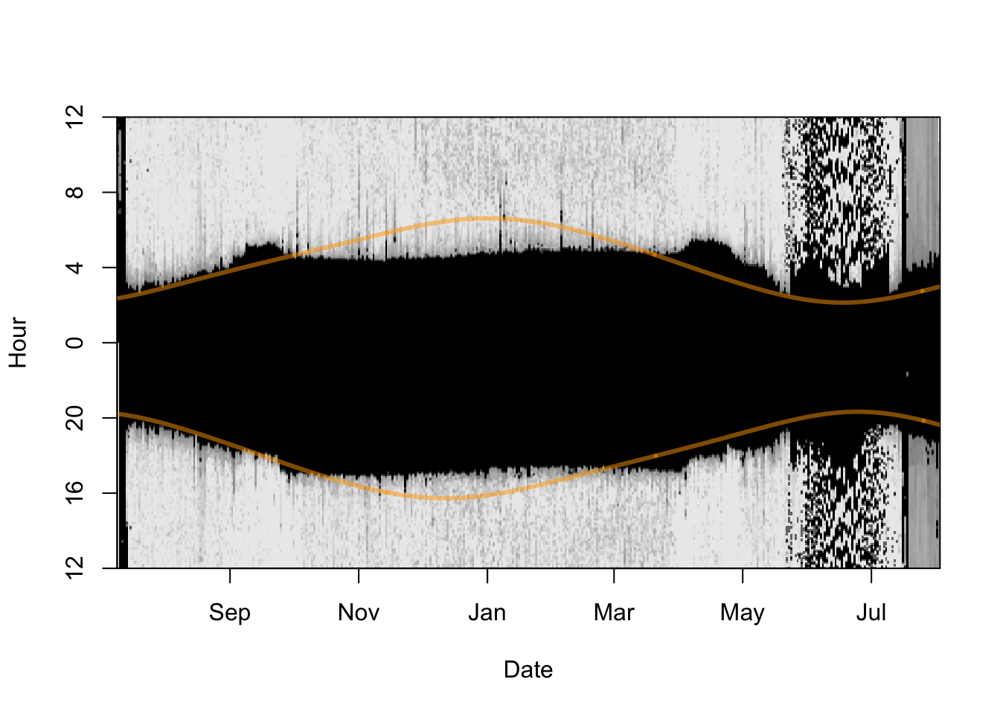
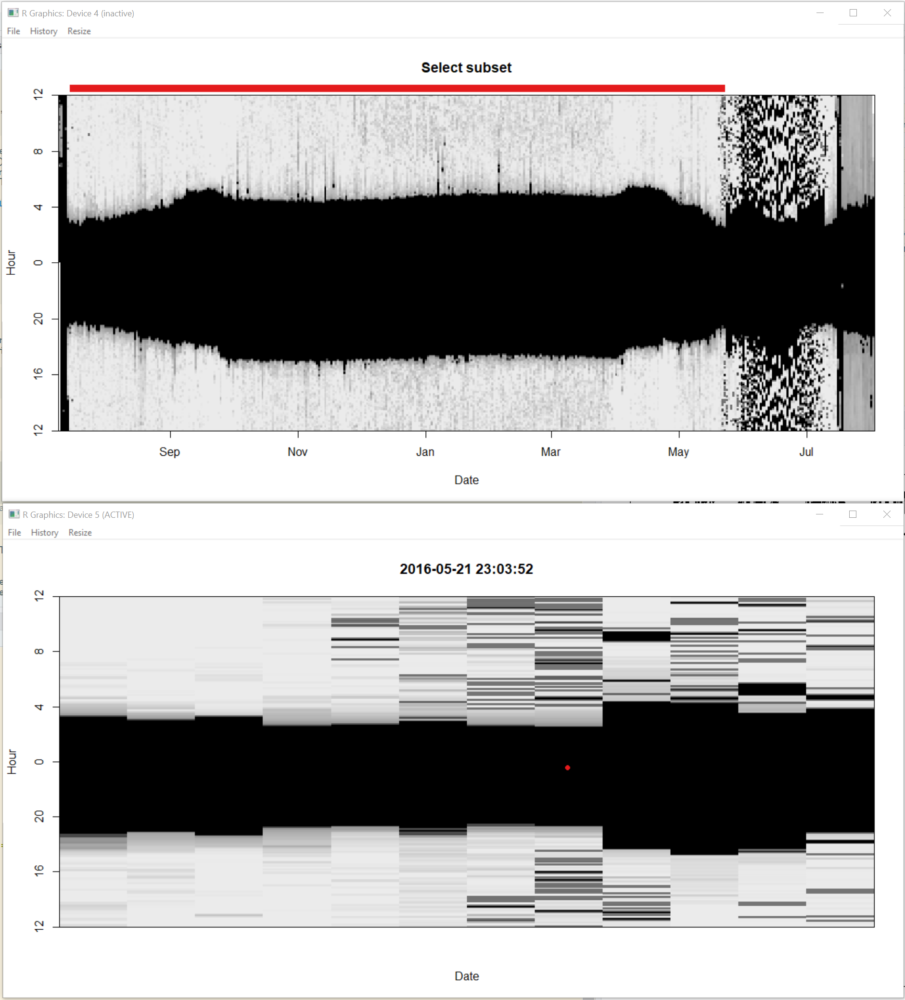

Chapter 4 Twilight Annotation
There are a few options for how to define and edit twilights.
All tools discussed in this manual require as one of their inputs a data frame containing the times of sunrise and sunset (henceforth twilight events) for the duration of the study period. The twilight events are estimated based on a light-level threshold, which is the light value that separates day from night - values above the threshold indicate the sun has risen and values below the threshold value indicate the sun has set. There are a few options for how to generate the twilight data. twilightCalc is one function that allows transitions to be defined and is part of the GeoLight package. Given the much better realization of this process in TwGeos, we will not discuss the GeoLight version of defining twilights. TwGeos provides an easier to use and more interactive process that is called preprocessLight. An important input, besides the raw data, is a pre-defined light intensity threshold value.
 How do I choose the right threshold?
How do I choose the right threshold?
How do I know which threshold to use: You should choose the lowest value that is consistently above any noise in the nighttime light levels. Here, we use a threshold of 2.5, that is above any nighttime noise. However, this value is tag and species specific. For forest interior, ground dwelling species a lower threshold may be helpful, especially if there isn’t much ‘noise’ during the night. A threshold of 1 may be appropriate for such species.
It is a good idea to plot (parts) of the dataset and see how the threshold fits into the light recordings:
threshold <- 2.5
col = colorRampPalette(c('black',"purple",'orange'))(50)[as.numeric(cut(raw[2000:5000,2],breaks = 50))]
par(mfrow = c(1, 1), mar = c(2, 2, 2, 2) )
with(raw[2000:5000,], plot(Date, Light, type = "o", pch=16, col = col, cex = 0.5))
abline(h=threshold, col="orange", lty = 2, lwd = 2)
Another useful plot can be created using lightImage; In the resulting figure, each day is represented by a thin horizontal line that plots the light values as grayscale pixels (dark = low light and white = maximum light) in order from bottom to top. a A light image allows you to visualize an entire data set at once, and easily spot discrepancies in light to dark transitions. Additionally, you can add the sunrise and sunset times of the deployment or retrieval locations (using addTwilightLine). This may help to spot inconsistencies in the dataset, e.g.:
time shifts - resulting in a good overlap of twilight times at the beginning but a systematic shift between expected and recorded twilight times.
false time zone - if the predicted sunrise and sunset times are shifted up- or downwards it is highly likely that your raw data is not recorded (or has been transformed) in GMT (or UTC). Check with producer or data provider.
Furthermore, the lines can help to identify the approximate timing of departure and arrival to the known deployment or retrieval site and this may help to identify calibration periods that are required in the next steps of the analysis.
offset <- 12 # adjusts the y-axis to put night (dark shades) in the middle
lightImage( tagdata = raw,
offset = offset,
zlim = c(0, 20))
tsimageDeploymentLines(raw$Date, lon = lon.calib, lat = lat.calib,
offset = offset, lwd = 3, col = adjustcolor("orange", alpha.f = 0.5))
Depending on the tag type, geolocator data are automatically adjusted for clock drift by the manufacturer, or, can be easily corrected by comparing the internal device time and real time when data is downloaded. For practical reasons, clock drift in geolocator is assumed to occur at a constant rate. If geolocator data are affected by clock drift the longitude estimates during stationary periods will drift continuously in one direction. In case the tag had stopped recording before data download or the internal time stamp is obviously incorrect, clock drift can be adjusted during the process of locations estimation. In short, an estimated clock drift is added to the twilight data and longitudinal positions are (re)calculated, e.g. using a best-guess sun elevation angle. Clock drift is adequately corrected for, if the slope of a linear regression between longitude and time during stationary periods is zero, showing that there is no directional changes in longitude over time anymore. Latitude estimates are negligibly affected due to the small difference in shifting sunrise and sunset times within the same day.
In the next step, we want to define daily sunrise and sunset times. preprocessLight is an interactive function for editing light data and deriving these twilight times Note: if you are working on a Mac you must install Quartz first (https://www.xquartz.org) and then set gr.Device to “x11” in the function. If you are working with a virtual machine, the function may not work at all. Detailed instructions of how to complete the interactive process can be found by running the following code:
Below, we explain the major functionalities.
When you run,
twl <- preprocessLight(raw,
threshold = threshold,
offset = offset,
lmax = 20, # max. light valu
gr.Device = "x11") # MacOS version (and windows)two windows will appear. Move them so they are not on top of each other and you can see both. They should look like a big black blob. This identifies the “nightime” period over time. The top of the blob shows all the sunrises and the bottom of blob shows all the sunsets. You can note for instance that the days get longer (and thus the nights shorter) at the end of the time series, because the blob gets thinner. You may even note changes in the light image that relate to changes in activity patterns or breeding behavior.
Step 1. Click on the window entitled “Select subset”. With the left mouse button choose where you want the start of the dataset to be, and right mouse button to choose the end. You will notice that the red bar at the top moves and that the second window zooms into that time period. Select when you want your time series to start and end. This allows you to ignore for instance periods of nesting. Once you are happy with the start and end of the time series press “a” on the keyboard to accept and move to next step.

Step 2. click on the window entitled “Find twilights” and the second window will zoom in. All you need to do here is click in the dark part (in the zoomed in image i.e. the one not entitled “Find twilights”) of the image and this will identify all the sunrises (orange) and sunsets (blue) based on the threshold defined in the previous section. Press “a” on the keyboard to accept and move to next step.

Step 3. This step is for adding or deleting points. If there are no missing data points, you can skip this step by pressing “a” on the keyboard. However, if you do want to add a point, you can click on the “Insert twilights” window to select a region of “the blob” that the second untitled window will zoom into. In the zoomed window, use left mouse click to add a sunrise, and right mouse click to add a sunset. You can use “u” on the keyboard to undo any changes, and “d” to delete any points which are extra. Press “a” to move to next step.
Step 4. This step allows you to find points which have been miss-classified (often because the bird was in the shade or in a burrow) and to move the respective sunrise or sunset to where it should be. Choose a point by clicking on it in the “edit twilights” window and the other window will display the sunrise (or sunset) from the previous and next days (purple and green) relative to the current sunrise or sunset (in black). Thus if the black line shows a much earlier sunset or later sunrise than the purple and green ones, it is likely badly classified. . You can then left click at the point where you want the day to start and press “a” to accept and move the sunrise or sunset. You will notice the red line then moves. Do this for as many points as necessary.

Then close the windows with “q”.
 How important is it to edit twilights?
How important is it to edit twilights?
If you don’t have a priori reason and criteria to strongly edit twilight events, it is generally better to be a bit conservative with editing. This prevents that data are changed into an unwanted direction, e.g. erroneously removing good data points (amidst shading events), or informative events such as strong movements. Also the criteria to edit or remove badly classified twilights will be different depending on the method you use to infer locations. For curve methods, similarity in the shape of the curve around sunrise or sunset is most important, while for threshold methods the similarity in the sunrise and sunset events itself is important.
Have a look at the output
Twilight Rise Deleted Marker Inserted Twilight3 Marker3
1 2015-07-15 19:34:02 FALSE FALSE 0 FALSE 2015-07-15 19:34:02 0
2 2015-07-16 03:01:00 TRUE FALSE 0 FALSE 2015-07-16 03:01:00 0
3 2015-07-16 19:43:53 FALSE FALSE 0 FALSE 2015-07-16 19:43:53 0
4 2015-07-17 02:51:06 TRUE FALSE 0 FALSE 2015-07-17 02:51:06 0
5 2015-07-17 19:48:53 FALSE FALSE 0 FALSE 2015-07-17 19:48:53 0
6 2015-07-18 02:46:06 TRUE FALSE 0 FALSE 2015-07-18 02:46:06 0The output contains the following important information:
- Twilight
- The date and time of the sunrise/sunset events
- Rise
- whether the Twilight is a sunrise (TRUE) or a sunset (FALSE)
- Deleted
- whether you marked this twilight with a “d”, that means it is still in the file and can/should be exluded later on.
- Marker (see detailed description in
?preprocessLight) - Inserted (whether this Twilight was manually inserted)
- Twilight3 (the original Twilight. Only different to Twilight if you edited the timing)
Other processes like twilightCalc or the software TAGS produce different outputs but it is preferred to get them into this format (at least with the columns Twilight and Rise), since you can go ahead with any analysis you want using these two columns (note: do not save these two columns only, since the other information is important to reproduce your analysis).
Save the output file as a .csv file, so that you never have to do this step again.
To save this file we use the metadata variables that were defined above:
This can later be loaded using the following code (note, that you have to define the class type POSIXC for the date):
twl <- read.csv(paste0(wd, "/Results/", Species, "/", ID, "_twl.csv"))
twl$Twilight <- as.POSIXct(twl$Twilight, tz = "GMT") # get the Twilight times back into the POSIX. class formatThe result of this first part that is independent of which package/analysis will be used next is the twilight file that should at least look like (can have more columns):
Twilight Rise
1 2015-07-15 19:34:02 FALSE
2 2015-07-16 03:01:00 TRUE
3 2015-07-16 19:43:53 FALSE
4 2015-07-17 02:51:06 TRUE
5 2015-07-17 19:48:53 FALSE
6 2015-07-18 02:46:06 TRUECleaning/Filtering twilight times
Automated filtering of twilight times should be handled carefully. There is no perfect function that cleans your twilight file. However, twilightEdit can help to filter and remove (mark them as deleted) outliers (e.g. false twilights). The filtering and removing of twilight times is based on a set of rules:
- if a twilight time is e.g. 45 minutes (outlier.mins) different to its surrounding twilight times, and these surrounding twilight times are within a certain range of minutes (stationary.mins), then the twilight times will be adjusted to the median of the surrounding twilights.
- if a twilight time is e.g. 45 minutes (outlier.mins) different to its surrounding twilight times, but the surrounding twilight times are more variable then you would expect them to be if they were recorded during stationary behavior, then the twilight time will be marked as deleted.
The argument windows defines the number of twilight times surrounding the twilight in focus (e.g. same as in conventional moving window methods).
twl <- twilightEdit(twilights = twl,
offset = offset,
window = 4, # two days before and two days after
outlier.mins = 45, # difference in mins
stationary.mins = 25, # are the other surrounding twilights within 25 mins of one another
plot = TRUE)
In this particular case and with the parameters, four twilight times have been corrected. Based on the output, you can also exclude them for further analysis. While you can also save the output file, we recommend archiving the twilight file from above and redo the twilightEdit after reading in the archived twilight file from above.
This method helps to adjust and remove twilight times that are either outliers or false twilights given a set of rules. While subjective to a certain degree as well as reproducible, the method may not be able to detect all false twilight times and may even remove correct entries during fast migration periods.